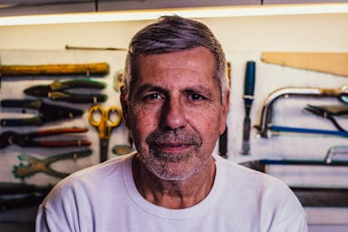
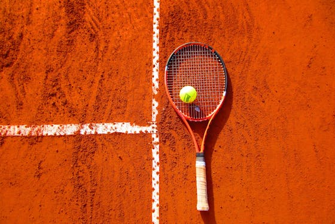

José Polesi
jose.polesi@al.infnet.edu.brAmigos
- 
Sobre mim
Olá, meu nome é José Polesi e estou no primeiro ano do curso de Engenharia de Software. Aos 25 anos, decidi investir na minha paixão por tecnologia e programação, o que me trouxe para o mundo acadêmico com a intenção de construir uma base sólida para minha carreira. Apesar de estar no início da minha jornada, já estou imerso em projetos e atividades que me permitem explorar e aplicar conceitos fundamentais da área.
Com uma forte motivação para aprender e crescer, tenho me dedicado a adquirir habilidades práticas e teóricas que me ajudarão a enfrentar desafios futuros. Estou entusiasmado com as oportunidades de desenvolvimento que o curso proporciona e ansioso para contribuir com meu entusiasmo e criatividade em projetos colaborativos, enquanto continuo a construir meu conhecimento e experiência no campo do desenvolvimento de software.
Meus hobbies

- 